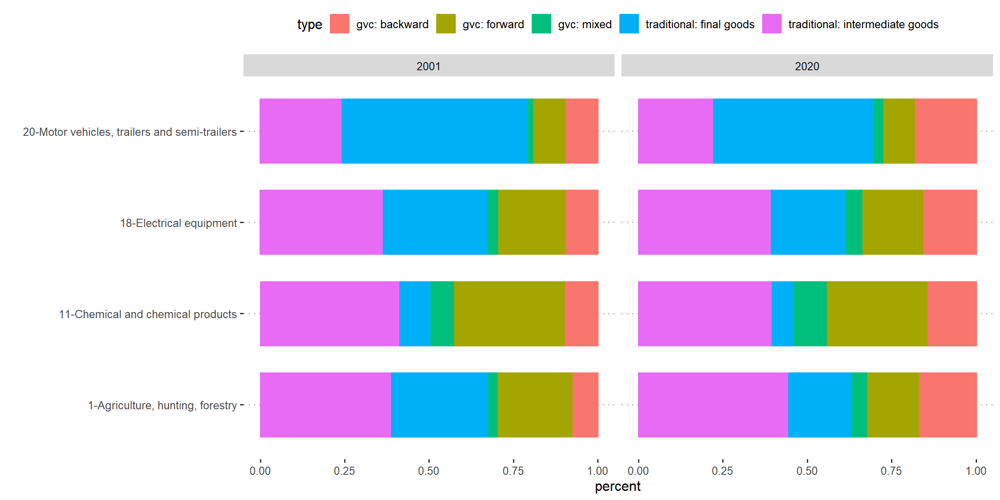
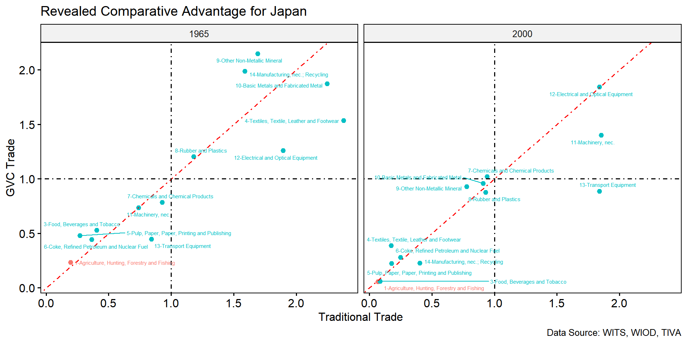
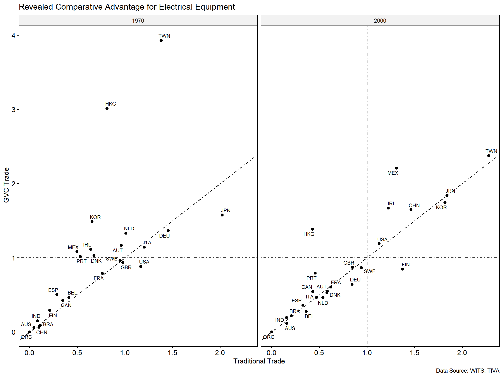

But how do we know that all $20 imported by B is actually used to produce B’s exports?
Input–Output Tables
\[
\boxed{\text{Who supplies inputs to whom?}}
\]
flowchart LR
A["Domestic<br/>Industry A"] <--> M["Domestic<br/>Manufacturing"]
I["Imported<br/>inputs"] --> A
I --> M
A --> E["Exports"]
M --> E
A --> D["Domestic<br/>final demand"]
M --> D
MRIO Data Used in WITS GVC Indicators
WITS GVC combines GVC indicators calculated from several global input–output databases:
Database
Countries
Sector
Period
Eora26
189
26
1990-2015
WIOD 2016
43 + RoW
56
2000-2014
Long-run WIOD
25
23
1965-2000
OECD TiVA/ICIO
76
45
1995-2020
ADB MRIO
62
35
2007-2022
Global Value Chains
GVCs refer to the fragmentation of production across countries, where different stages of producing a good or service are carried out in different countries.
Integrated assemblers. Heavy use of imported inputs and output tied to chains: Motor vehicles and Electrical
Integrated suppliers. Domestic value added is a major input into other countries’ exports: Chemicals
Low intensity
Marginal downstream. Little GVC activity, mostly imported inputs in final goods
Marginal upstream. Little GVC activity, mostly supplying primary inputs that others process: Agriculture
Four sectors in Japan

Japan comparative advantage: revisited


Key takeaways
GVCs fragment production across countries
GVC participation can take different forms: pure backward, pure forward, and two-sided (mixed) participation.
Input–output tables make GVC measurement possible by tracing value added through industries and countries across multiple production stages.
Suggested Readings
Baldwin, R., & Ito, T. (2021). The smile curve: Evolving sources of value added in manufacturing. Canadian Journal of Economics/Revue Canadienne d’économique, 54(4), 1842–1880.
Baldwin, R., & Venables, A. J. (2013). Spiders and snakes: Offshoring and agglomeration in the global economy. Journal of International Economics, 90(2), 245–254. https://doi.org/10.1016/j.jinteco.2013.02.005
Elms, D. K., & Low, P. (2013). Global value chains in a changing world. World trade organization.
Grossman, G. M., & Rossi-Hansberg, E. (2008). Trading Tasks: A Simple Theory of Offshoring. American Economic Review, 98(5), 1978–1997. https://doi.org/10.1257/aer.98.5.1978
Koopman, R., Wang, Z., & Wei, S.-J. (2014). Tracing Value-Added and Double Counting in Gross Exports. American Economic Review, 104(2), 459–494. https://doi.org/10.1257/aer.104.2.459
Kinoshita, T., Kishida, H., & Amemiya, A. (2004). Strategy of Japanese manufacturers in ASEAN and China in light of emerging FTA initiatives.
OECD. (2011). Globalisation, comparative advantage and the changing dynamics of trade (Online-Ausg). OECD.
Suvannaphakdy, S., & Pham, T. P. T. (2023). GVC Reconfiguration. ISEAS–Yusof Ishak Institute Singapore.
Todo, Y., & Inoue, H. (2021). Geographic Diversification of the Supply Chains of Japanese Firms. Asian Economic Policy Review, 16(2), 304–322
WTO and JETRO-IDE (2011), Trade patterns and global value chains in East Asia: from trade in goods to trade in tasks.
Xing, Y., and N. Detert (2010). How the iPhone Widens the United States Trade Deficit with the People’s Republic of China. ADBI Working Paper 257. Tokyo: Asian Development Bank.
Data
Mancini, M., & Taglioni, D. (2025). Economic consequences of trade and global value chain integration: A measurement perspective. The World Bank Economic Review, https://doi.org/10.1093/wber/lhaf017.